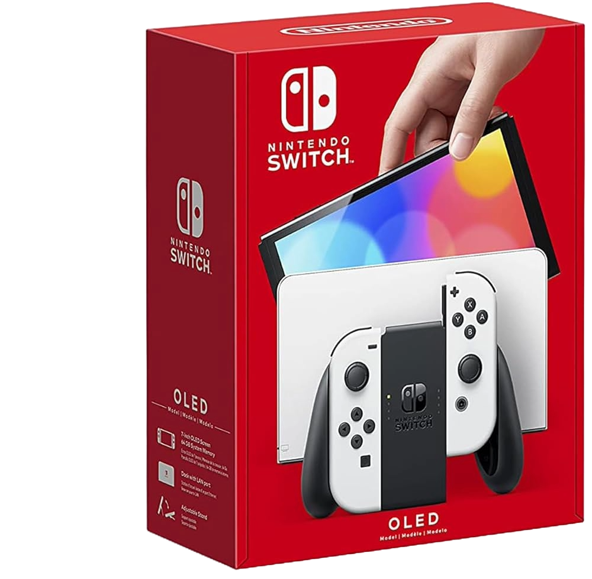
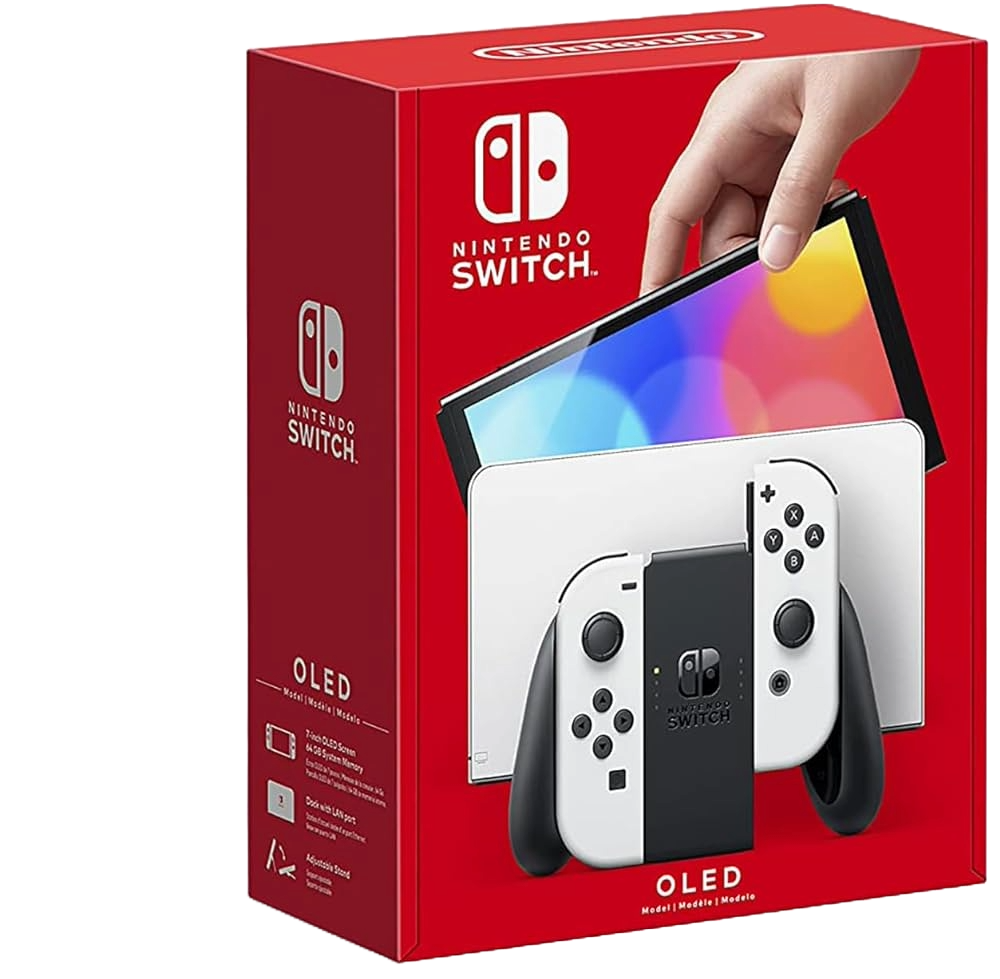

-Pantalla: Pantalla táctil multi-touch OLED capacitiva de 7.0 pulgadas
-Resolución de pantalla: 1280x720
-CPU/GPU: Procesador NVIDIA Tegra personalizado
-Almacenamiento: 64 GB
-Batería interna: batería de iones de litio de 4310mAh
-Duración de batería: entre 4.5 y 9 horas dependiendo del juego
-Tiempo de carga: aproximadamente 3 horas
-Salida de video: Hasta 1080p en modo televisor vía HDMI. Hasta 720p en modo portátil y sobremesa
-Salida de audio: Salida 5.1ch PCM. Salida por HDMI en modo televisor
-Bocinas: Estéreo
-Conexión USB: USB tipo C
-Conexión inalámbrica: Wi-Fi (IEEE 802.11 que cumple cona/b/g/n/a) / Bluetooth 4.1
-Entrada de micrófono/audífono: 3.5 mm (estándar CTIA)
-Entrada MicroSD: compatible con memorias microSD, microSDHC y microSDXC de hasta 2 TB
-Sensores: acelerómetro, giroscopio y sensor de iluminación
Características:
¡Te presentamos al nuevo miembro de la familia Nintendo Switch!
Juega en casa o en el camino en una vibrante pantalla OLED de 7 pulgadas (17.78 cm) con la consola Nintendo Switch modelo OLED.
Además de la nueva pantalla, que ofrece colores brillantes y contrastes definidos, la consola Nintendo Switch modelo OLED incluye
un soporte ajustable y amplio para encontrar el ángulo de vista perfecto, una base con puerto LAN para conexión por cable en el modo TV
(el cable LAN se vende por separado), 64 GB de almacenamiento interno y audio mejorado al usar los altavoces de la consola en
los modos portátil y semiportátil.
 
